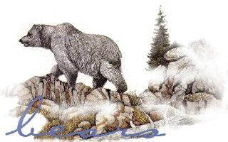

About our School
Mt. Boucherie Secondary opened its doors in 1975 as a grade 8 to 12 high school. We are located at the base of Mount Boucherie in West Kelowna. We offer a wide variety of programs and courses for students. Please visit our Programs/Courses site for more information. We trust that you will enjoy your time here at Mount Boucherie and that we will all be enriched in sharing our experiences and values. We encourage you to bring your concerns and your joys to our attention, for troubles shared are halved, while shared happiness just keeps on growing! This is YOUR school, and you have ready access to your administrators, counsellors, and teachers. We graduate students with dignity, purpose and options.
